MATSCI 342 · Stanford · April 2026
Programming physical computers
From neuromorphic abstractions to frontier AI
Steven Abreu
Handoff from Jens
What Jens showed us
A theory of representation across computational substrates
NIR — continuous-time dynamics, graphs, substrate-agnostic
Theory gives us the abstraction.How can we materialize these advantages?
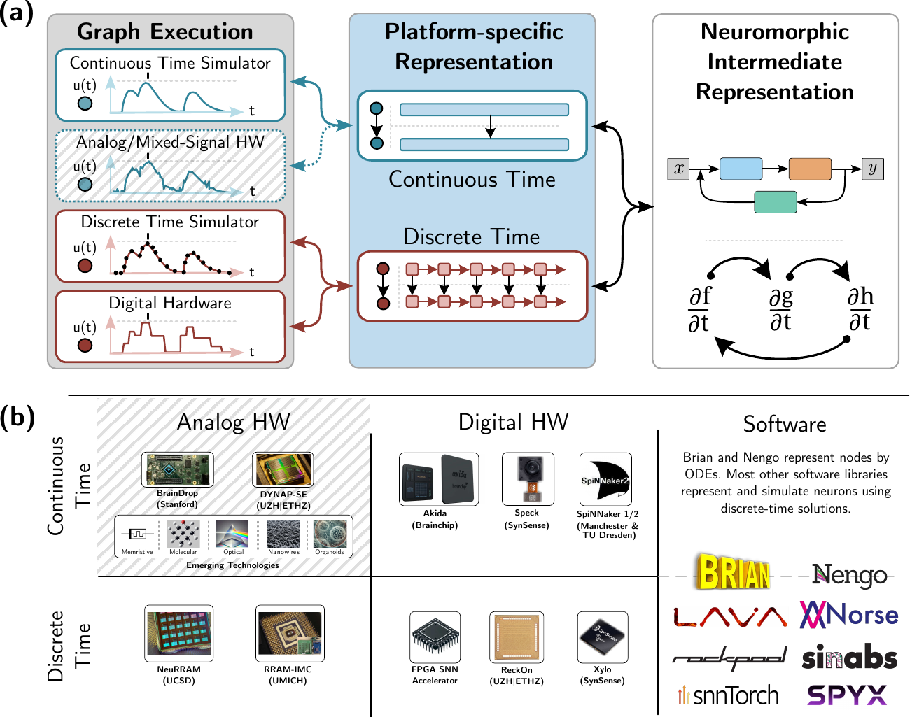
Pedersen & Abreu et al. · Nature Comm. 2024
Jens covered theory. My half is applied — real hardware, real numbers, honest caveats, and a look at where the abstraction is and isn't paying off yet.
Agenda
Where we're going
Motivation — AI is scaling; so is its energy cost
Fundamentals — computing with physics & the programming problem
Loihi 2 case studies — flow cytometry · SSMs · MatMul-free LLM
The analog frontier — IBM 3D MoE · photonic crossbars
Coding agents for new frontiers — automating the tedious part
Synthesis — programming is the bottleneck
§ 01
Motivation
AI is scaling, but so is its energy cost.
Part 1 · Motivation
AI progress and the energy it demands
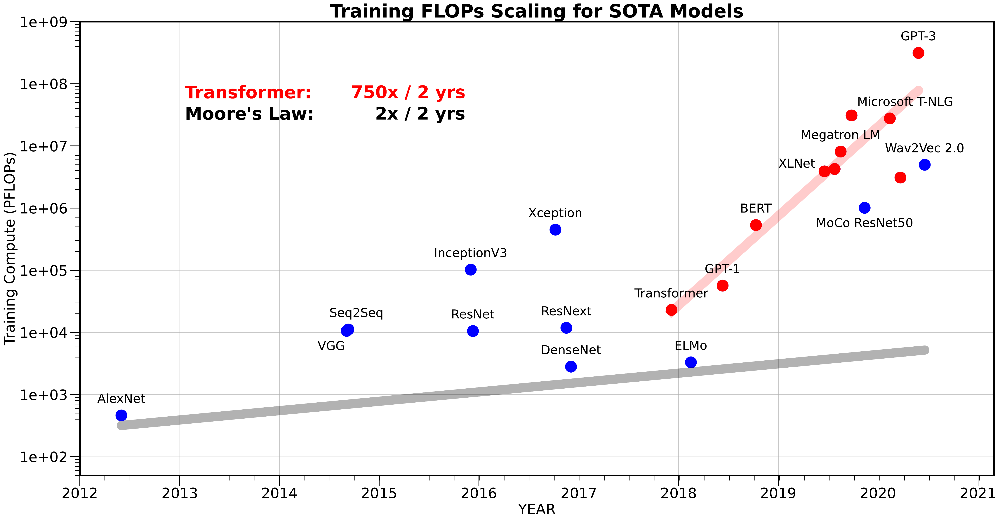
Gholami et al. — AI and the Memory Wall
The headlines are familiar:
Training ≈ city-scale energy
Datacenters projected at ~25% of global electricity by 2030
Reasoning models burn inference, not just training
Keep this short. Students know the scaling story. Use the dropdown to flip between charts — pick one the day before, this UI is just for selection.
Part 1 · Motivation
AI progress and the energy it demands
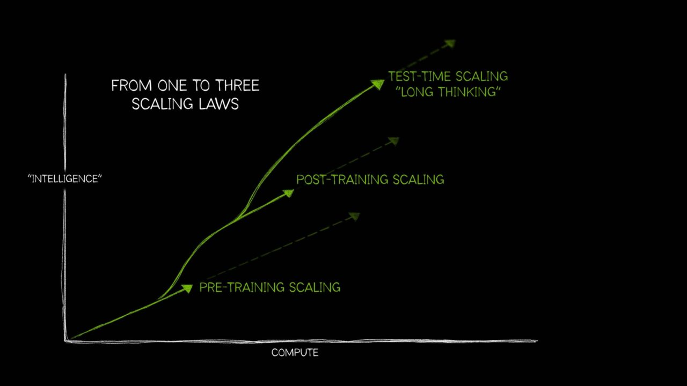
NVIDIA — Three AI scaling laws (training, post-training, test-time)
AI methods keep changing
Hardware requirements change
We need a diversity of approaches
Keep this short. Students know the scaling story. Use the dropdown to flip between charts — pick one the day before, this UI is just for selection.
Part 1 · Motivation
Different substrates scale differently
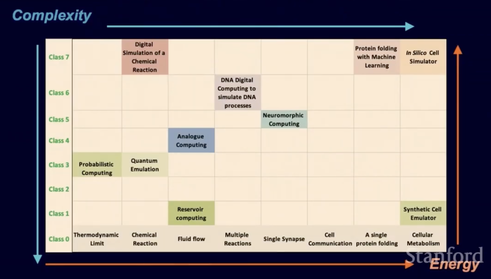
Shankar · Stanford Energy Seminar 2025
Each square has its own physics — and its own ceiling.
Careful: don't overclaim. Each substrate has tradeoffs. But the *shape* of those tradeoffs is different from digital CMOS, and that's what opens new headroom. This talk is a tour of a few squares on this table.
§ 02
Fundamentals
Computing with physics · Ω → λ → Ψ
Something Jens and I have been thinking about for a long time: programming new computing hardware is a fundamental, not incidental, problem. Two pieces here — reservoir computing as the simplest way to compute with physics, then the Ω → λ → Ψ frame for why that isn't enough.
Part 2 · Fundamentals
What does it mean to compute with physics?
Feed a signal into a fixed, nonlinear, high-dimensional dynamical system
Read out its state and train only a linear output layer
That's it — the physics does the work
Any system with fading memory + nonlinearity can, in principle, compute.
Jaeger 2001 · Maass et al. 2002 · Cucchi & Abreu et al. 2022 (tutorial)
Very limited programmability with no composition, abstraction, and diminishing returns from scaling.
Part 2 · Fundamentals
The Programming Problem
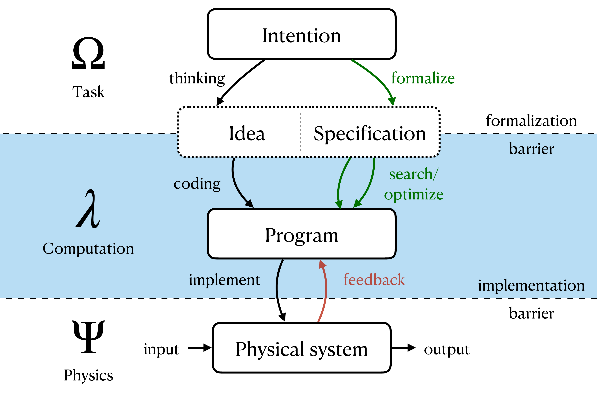
Abreu & Pedersen · Neuromorphic Programming, ICONS 2024 (after Jaeger et al. 2023)
Ω = intention. λ = formal program. Ψ = physical system. Two barriers: formalization (Ω → λ, crossed by coding / synthesis) and implementation (λ → Ψ). On a GPU, the λ → Ψ barrier is invisible — 70 years of compilers. On neuromorphic and analog, it's wide open. Through-line of the talk.
§ 03
Loihi 2 case studies
Digital neuromorphic computing
Part 3 · Loihi 2
Loihi 2 at a glance
120 neurocores per chipUp to 8192 stateful neurons per neurocore
Asynchronous design with barrier sync — but programmed against a global timestep Scales up to systems with ~1B neurons and ~128B synapses
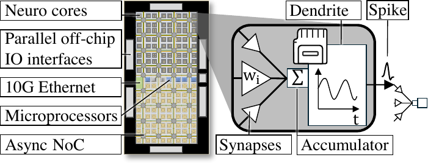
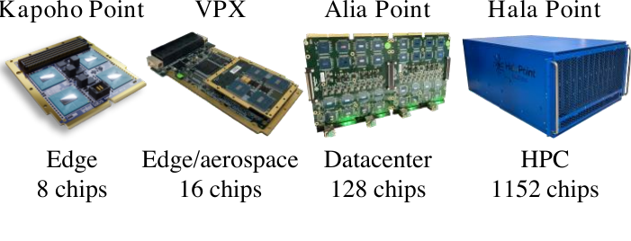
Pierro & Abreu et al. 2025
Event-driven, asynchronous, tight memory-compute integration, programmable neuron models, on-chip learning.
Still digital — embodies neuromorphic principles without being analog.
Even if we just change this about the architecture, it enables a lot!!
Part 3 · Loihi 2
Execution modes matter
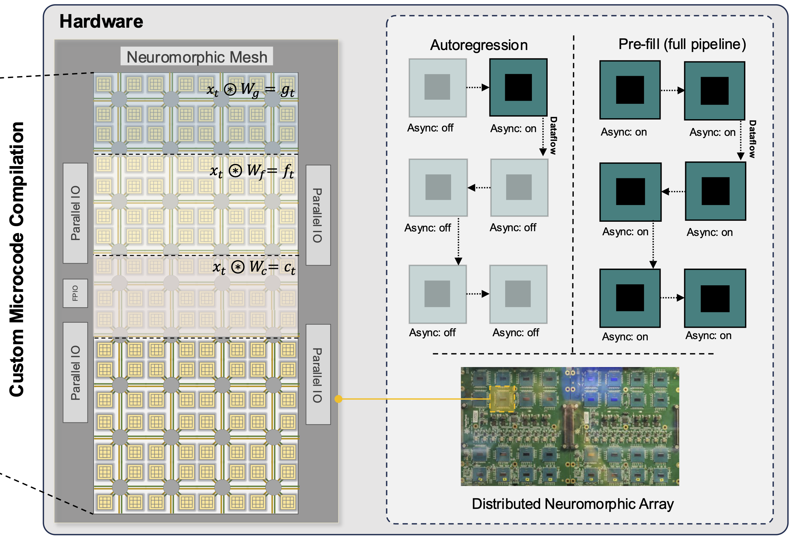
Zhu et al. 2024 · Scalable MatMul-free Language Modeling
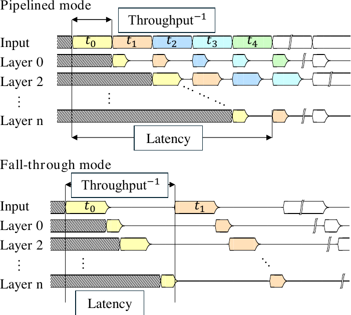
Pierro & Abreu et al. 2025
Not all ops on Loihi are equal — microcode vs. fixed-function matters for throughput and energy. Context for why the next case study hits 35× / 1200× rather than a modest factor.
Case 1 · Flow cytometry
Event-based flow cytometry on Loihi 2
Event camera + SNN on Loihi 2
First fully event-based cytometry pipelineSensor-to-inference co-designed — no unnecessary frames
Substrate transfer end-to-end: biology → event sensor → SNN → chip.
Abreu et al. 2023 · CVPR Workshops
Case 2 · Sparse SSMs
State space models: linear recurrent dynamical systems
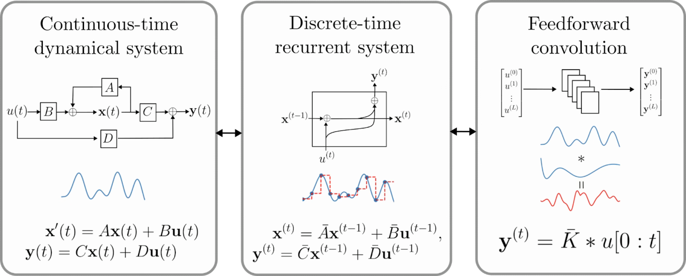
Three equivalent views of an SSM
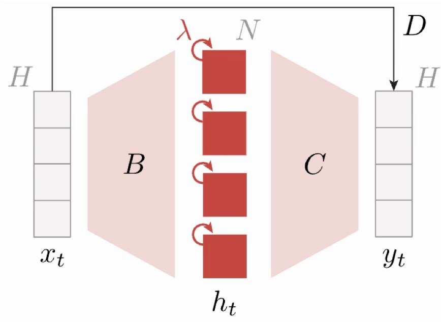
Zucchet et al. 2023 · LRU with diagonal state
NIR-native primitives: continuous-time linear dynamics with diagonal, complex-valued state
SSMs are linear recurrent dynamical systems. Three equivalent views (ssms.png): continuous-time ODE, discrete-time recurrence, feedforward convolution.
In modern deep SSMs (S4 / S5 / LRU / Mamba) the recurrent matrix A is diagonal — every hidden unit only talks to itself. But the state is complex-valued, which gives each unit oscillatory behavior. The Zucchet LRU figure makes that diagonal-complex structure explicit.
This is exactly the kind of primitive NIR wants to express: continuous-time dynamics, minimal connectivity, composable into graphs. The discretization step is the honest caveat — today we discretize before deployment on Loihi.
Case 2 · Sparse SSMs
Sparsify, quantize, map to Loihi
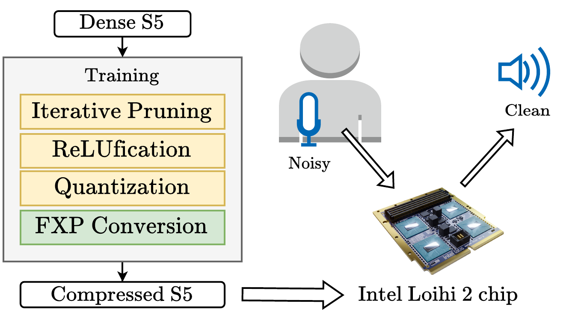
Pierro & Abreu et al. 2025
Setup: real-time audio denoising, streaming, batch size 1.
>90% weight sparsity + int8
Activation sparsity on top (ReLU instead of GELU)
Mapped end-to-end to Loihi 2
35× faster · 1200× less energy vs. edge GPU.
Case 2 · Sparse SSMs
Sparsity dominates the Pareto front
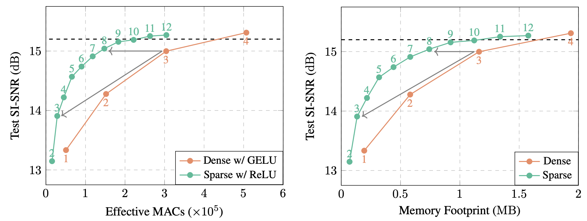
Pierro & Abreu et al. 2025
Sparse-w/-ReLU SSMs Pareto-dominate dense-w/-GELU on both compute and memory
Sparsity buys you a smaller, cheaper model at the same accuracy
This lesson is not unique to neuromorphic — it's mirrored across domains, and largely unexploited.
Case 2 · Sparse SSMs
The sparsity story beyond SSMs
Mixture-of-Experts is the dominant sparsity story in modern LLMs — activate a few large experts per token.Fine-grained MoEs (many small experts) scale even better per parameter [Krajewski 2024 · He 2024] Mixture of a million experts pushes this to the limit [He 2024]
Hardware gap: GPUs and TPUs struggle with fine-grained sparsity — many small, scattered memory accesses. Neuromorphic and in-memory hardware are the natural match.
Connect the sparse-SSM story to the wider ML world. MoE is well-known; fine-grained MoE (Krajewski 2024, He 2024) scales even better but is bottlenecked by GPU memory access patterns. He et al.'s "Mixture of a Million Experts" is the extreme case. The hardware gap is exactly what neuromorphic and analog in-memory substrates are good at — this teeing up the analog frontier later in the talk.
Case 3 · MatMul-free LLM
A MatMul-free LLM on Loihi 2
370M parameters — first LLM on neuromorphic hardwareTernary weights, element-wise ops, no matmul
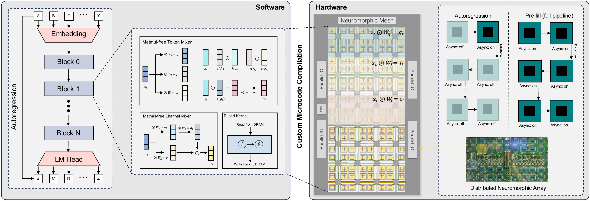
Abreu et al. 2025 · Zhu et al. 2025
Autoregressive decoding is where GPUs leave energy on the table — arithmetic intensity collapses~3× faster and ~77× less energy per token vs. H100 running a same-size Transformer (batch size 1)
§ 04
The analog frontier
What physics promises — and what programming doesn't give us yet.
Part 4 · Analog
Where the physics gets interesting
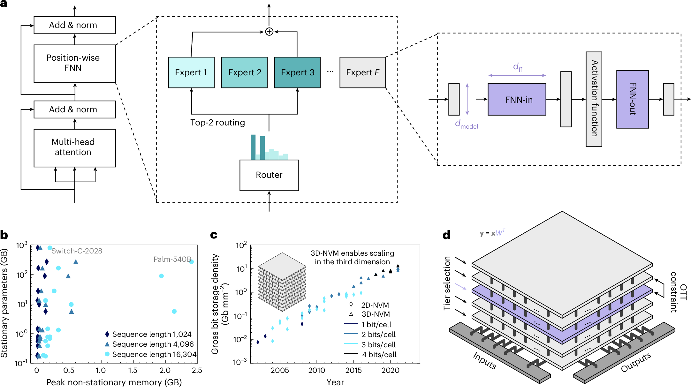
IBM 3D analog in-memory MoE (simulation)
MoE sparsity × analog locality, compounded.
Büchel et al. 2025
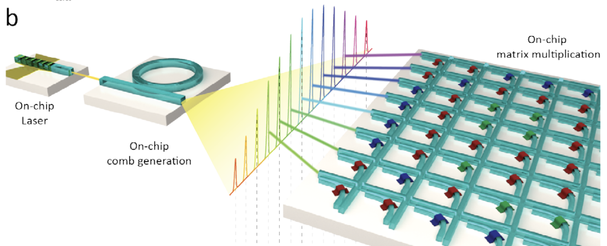
Photonic matrix–vector multiplication
MVM at constant speed — independent of matrix size.
Feldmann et al. 2021 · Shastri et al. 2021
Both shift the bottleneck away from data movementprecision / noise / conversion wall instead.
I've spent much of my PhD working with physicists and material scientists to come up with
more efficient ways to compute. This is really hard.
re: IBM - 3D CiM LLM inference simulator
hierarchy of tiles with tiers of vertically stacked crossbars
using generic 3D stacked NVM (IBM is doing PCM, but ReRAM or FeFET also fits)
each MoE expert to its own physical tier -> 1000x less energy than GPUs
Sparsity + locality
re: photonic
phase change memory arrays for the weights
optical frequency combs for modulating the activations
Cross-cutting issues:
conversions (ADC, E/O)
precision
calibration, mismatch, coherence
do we need better abstractions here?
§ 05
Coding agents for new frontiers
If the programming stack is the bottleneck — can we let AI build it?
Part 5 · Coding agents
Low-level programming as the bottleneck
Every case study so far required months of manual work to cross the λ → Ψ barrier:
Writing low-level Loihi kernels by hand
Tuning microcode for each execution mode
Mapping graphs to chip topology
Re-deriving math after every architecture change
This is where most of the engineering time wentDesigning models and training was the easy part (albeit expensive..)
The neuromorphic LLM paper was ~80% plumbing, ~20% ideas. Similar for the sparse SSM work. This is the real bottleneck behind the programming-stack framing.
This is of course an exaggeration. I'm an algorithms guy after all.
HW design is HARD! But, once you have your chip, making it useful is also REALLY difficult.
Part 5 · Coding agents
Agents are writing optimized GPU kernels
K-Search
2.1× avg speedup over prior evolutionary methods14.3× on complex MoE kernelsBeats human-designed solutions on GPUMode TriMul @ H100
In production: Meta's KernelEvolve deploys agentic kernel synthesis across NVIDIA, AMD, and Meta's own accelerators — cutting dev time from weeks to hours .
Cao et al. 2026 · K-Search · arXiv 2602.19128
K-Search separates planning from code-gen — uses a co-evolving world model rather than treating the LLM as a blind code generator. That's the structural insight: LLMs as kernel writers need a loop with a real evaluator.
Meta's KernelEvolve is the production evidence. It's shipping, across three hardware families. Weeks-to-hours is the number they publish. This is not a research demo.
For the audience: this matters because kernel writing has always been the specialist bottleneck — the thing you needed a PhD-year to do for each new chip. That's now collapsing.
Part 5 · Coding agents
Agents could automate anything evaluatable
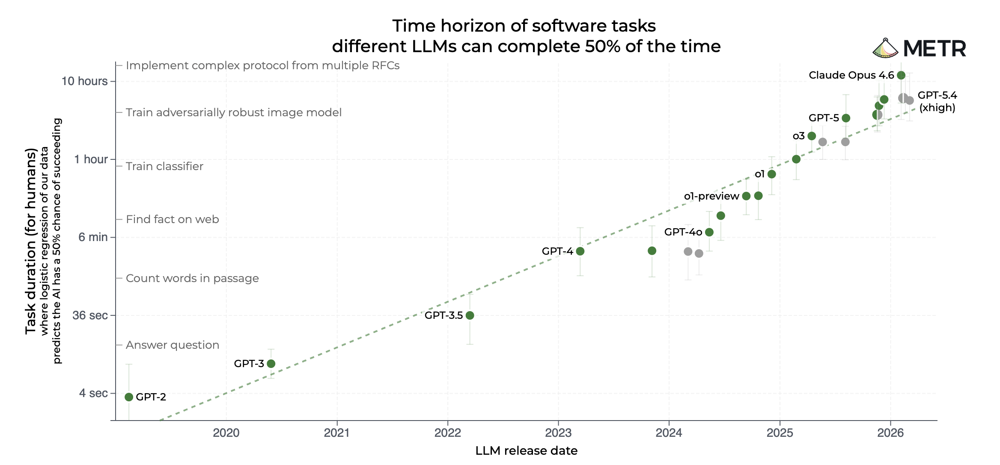
METR · time-horizon benchmark
The trend:
Task horizons double every ~7 months
Extrapolated: hour-long tasks → day-long tasks → week-long tasks
Gated on evaluatable-ness — clear specs, cheap checkers
Kernel design, arch search — all evaluatable.Design and abstraction become the bottleneck.
Coding agents don't replace NIR — they're what makes high-level NIR-like abstractions work.
conclusion for the whole talk: if implementation becomes cheap, the scarce resource is good specifications.
NIR is a good specification. Ω→λ becomes the bottleneck, not λ→Ψ.
That's why substrate-agnostic abstractions matter more over time.
§ 06
Synthesis
Programming is the bottleneck
Part 6 · Synthesis
The Programming Problem: Ω ↔ λ ↔ Ψ
GPUs: 70 years of compilers. The λ → Ψ barrier is invisible.
Neuromorphic digital: NIR and siblings. ~a decade old.
Analog: almost nothing. Every deployment is artisanal.
Coding agents: a new kind of compiler that helps with both barriers.
The physical embodiment of AGI is a software/abstraction problem as much as a materials one.
thank you
Thank you
steve@makermaker.ai
Takeaways
AI wants to scale further - substrates scale differently, and we need more diversity.Neuromorphic principles like sparsity, locality, low precision already win on digital.Co-design wins most where GPUs underperform: autoregressive, streaming, edge.Abstraction is the bottleneck , not the physics.Coding agents may enable us to program novel substrates faster, and at scale.
Appendix · Fundamentals
Paradigms of computation
Computing paradigms differ by how they relate the physics Ψ to the model of computation λ.
λ
Ψ
Theory-first
Imposes the theory of computation on a physical substrate.
E.g. digital
λ
Ψ
Physics-first
Imposes physical laws on the theory of computation.
E.g. quantum
λ
Ψ
Bridge
Match computations with a class of physical systems.
E.g. reservoir
λ
Ψ
Ψ
Transfer
Implement existing computing system on a different substrate.
E.g. neuromorphic
Abreu et al. 2024 · Photonics for neuromorphic computing
NIR sits in the Transfer column — continuous-time dynamics as a substrate-agnostic primitive, working today on digital/mixed-signal neuromorphic, analog still open.
Part 1 · Motivation
AI progress and the energy it demands
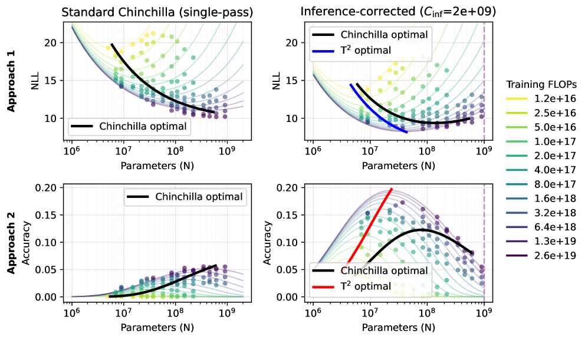
Gholami et al. — AI and the Memory Wall
The headlines are familiar:
Training ≈ city-scale energy
Datacenters projected at ~25% of global electricity by 2030
Reasoning models burn inference, not just training
Keep this short. Students know the scaling story. Use the dropdown to flip between charts — pick one the day before, this UI is just for selection.
Part 5 · Coding agents
Agents are discovering new architectures
ASI-ARCH
An autonomous agent that proposes, implements, trains, and evaluates novel architectures — end-to-end.
1,773 experiments · 20,000 GPU-hours106 new linear-attention architectures that beat human-designed baselinesEmergent design principles nobody had written down
Liu et al. 2025 · arXiv 2507.18074
"AlphaGo moment for model architecture discovery" — an autonomous system runs the full research loop. Note the scale: ~20k GPU-hours, comparable to one medium-sized training run but spread across nearly 2k architectural experiments.
What's striking: the agent surfaced design principles that weren't in the training data — emergent, not retrieved. Architecture is "evaluatable" (perplexity, downstream benchmarks) so it gets automated.
Part 5 · Coding agents
Agents are doing pre-training research overnight
"Give the agent a small but real LLM training setup and let it experiment autonomously overnight."
— Karpathy, autoresearch
The loop:
Modify training code
Run 5-min experiment
Evaluate validation metric
Iterate
Autoresearch
Not just kernels or architectures — the whole research loop is becoming automatable, as long as it has a crisp evaluator.
You wake up to a log of conducted experiments, hypotheses tried, improvements found.
Karpathy · github.com/karpathy/autoresearch
The common thread across ASI-ARCH, K-Search, KernelEvolve, and autoresearch: each one has a crisp, automatic evaluator (perplexity, kernel latency, correctness tests). That's the precondition. Agent + evaluator + compute = automation.
Karpathy's framing is useful because it's small-scale and obvious — you can run this yourself on one GPU. Makes the trend visceral.
BTW, there's also work on AI for chip design, like AlphaChip (Azalia Mirhoseini)
Part 5 · Coding agents
Open questions
How can we verify correctness against hardware quirks we don't fully model?
What's the right feedback signal — pass/fail, energy, latency, accuracy?
Can an agent generate kernels for analog substrates where simulation may be inaccurate?
Does this collapse the gap between λ and Ψ so any specification is trivially implemented?